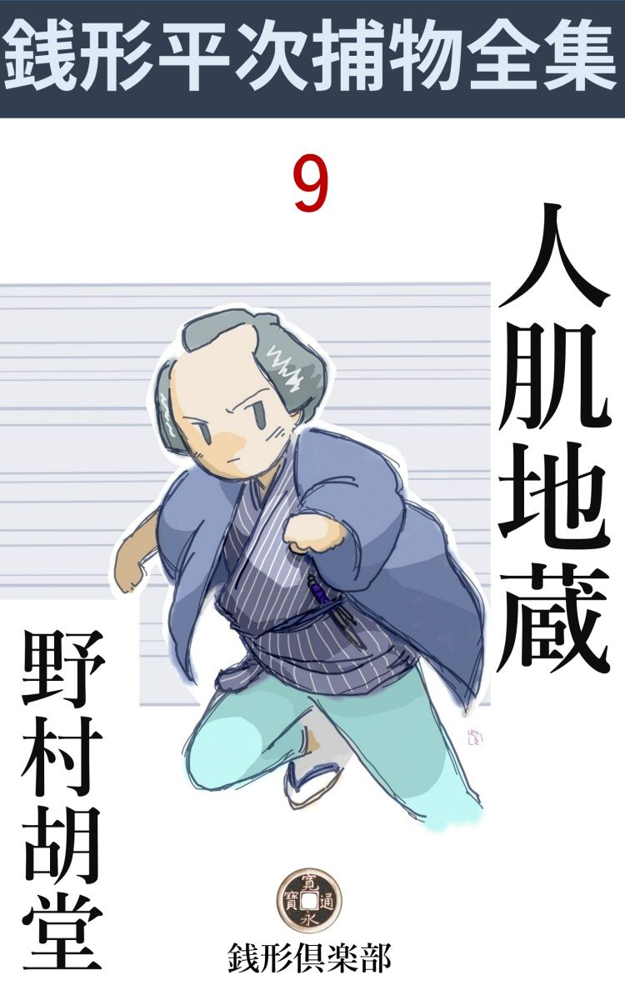

| 人肌地蔵: 銭形平次捕物全集第９話 (銭形倶楽部) | |
| 野村胡堂 | |
| ZENIGATA CLUB (2018) | |

一
かねやす迄を江戸のうちと言った時代、巣鴨や大塚はそれから又一里も先の田舎で、田も畑も、武蔵野の儘の木立も藪もあった頃のことです。
庚申塚 から少し手前、黒木長者の厳 めしい土塀の外に、五六本の雑木が繁って、その中に、一基の地蔵尊、鼻も耳も欠け乍 ら、慈眼を垂れた、まことに目 出 度 き相好 の仏様が祀られておりました。
もっとも、板橋街道の直ぐ傍で、淋しいと言っても、半町先には町並らしいものがあり、黒木長者に出入する商人やら里人やら、この地蔵尊の側を通して貰わなければなりません。が、何分にも、時代も素姓も知れぬ濡れ仏で、折々の斎 を献ずる者はおろか、涎掛 けの寄進に付く者もないという哀れな有様だったのです。
それが、何時から始まった事か、冷たい筈の石地蔵の肌が人間のように生 温 かくなっていることが発見されました。最初は多分、その辺で鬼ごっこでもしている、里の子供達が気が付いたのでしょう。何時の間にやらそれが、大人 の口に伝わって、巣鴨、大塚、駒込界隈一円の大評判になってしまいました。
「地蔵様の肌が暖かい！ そんな馬鹿なことがあるものか、石で彫 んだ鼻っ欠けの地蔵だ。大方陽が当って暖まるんだろう」
そんな事を言って、一向取り合わない人達もありましたが、
「いやに利いた風な事を言うじゃないか、嘘だと思うならいって触って見るがいい。まだ陽の当らねえ朝の内ほど温かで陽が高くなると、段々冷たくなるんだ。これは地蔵様が、夜のうちだけこちとらと同じように、床の中へ入んなさるからだと言うぜ、罰 が当ることを言うものじゃねえ」
こう言われると、この時代の迷信深い人達は、返す言葉もなかったのです。
畑の中の石の地蔵様が、人肌に暖まると言うのは、随分変った奇蹟 ですが、その上、誰が試みたかわかりませんが、この地蔵の台石の上へ上げて置いた、穴の明いた青銭が、翌る朝行って見ると、一分金に変っていたという噂が伝わったのです。
地蔵様の台石の上で、一夜のうちに寛永 通宝 が、ピカピカする一分金になる------ そんなことは、今の人では信じ兼ねるでしょうが、その頃の人は、極めて素朴 に、暢気 に、この奇蹟を受け容れてしまいました。
「あの地蔵様に上げた青銭や鐚銭 が、ピカピカする一分金や板銀に変るとよ」
「俺もやって見よう、少し元金 を貸しな」
「何を言やがる、手前に貸す位なら、俺が持っていって自分でやるよ。こんな手数の掛らない金儲けは、滅多にあるわけのものじゃねえ」
といったような騒ぎ------ 、事実、人肌地蔵の台石の上に置いた青銭や鐚銭 は、時々、丁銀や豆板銀に変ったり、稀 には一分金に変っていることもあるのでした。
その変りようが突拍子もなく、合石の上の銭が毎晩決って変ると限らないところが、変に射倖的 な迷信をあおって、巣鴨の人肌地蔵は、十日経たないうちに、福の神のように人気と尊敬を集めてしまいました。
我がガラッ八------ 捕物の名人、銭形平次の子分で、本名を八五郎、又の名ガラッ八という人気男------ が、親分の用事で庚 申 塚 の辺までいった帰り、フト、畑の中の人だかりを見付けて、鼻の下を長くして嗅ぎ廻った挙句、半刻ばかりの間にこれだけのネタを挙げてしまいました。神田へ帰って、身ぶり沢山にその話をすると、日頃あんまりガラッ八の話に身を入れた事の無い平次が、
「フーム、そいつは新しい術 だ。十日経たないうちに、請合変ったことがある。幸いお膝元の用事は片付いたから、手前は暫くそっちを見張っていちゃどうだ」
と乗気になります。
「あっしが？ ヘエー、巣 鴨 まで毎日出かけるんですかい」
「不足らしい事を言うな、細工の細かいところを見ると、相手は容易じゃねえぞ。甘く見ると、飛んでもねえ目に逢わされる」
「ヘエー、そんなもんですかねえ」
腑 に落ちないながら、ガラッ八はその日から巣鴨へ詰めることになったのです。
二
「親分、大変だッ」
「何だガラッ八、相変らず騒がしいじゃないか。そんなに泡 食わずに、静かに物を言えッ」
「それが静かに言えねえ、何しろ巣鴨から一と息に駆けて来たんだ」
「どうしたッてんだ。地蔵様が踊り出したとでも言うのか」
「そんな事なら驚きゃアしねえ、どうせ毎朝人肌に暖まっていようというあらたかな仏様だ」
「おや、変に落着いてるじゃないか、何が一体大変なんだ」
銭形平次も、少しばかり乗気になります。
「黒木長者の当主孫右衛門と、土地の百姓とが睨み合いになったんだ、今にも血の雨を降らそうてえ騒ぎ------ 」
「言う事が大きいなア、睨み合いの元をただせば何だ」
「それが、例の怪物 ------ 、何しろ青銭や鐚銭 を、板銀や一分金に変えるというあらたかな地蔵様だ。欲張りで通った黒木長者が、自分の畑にある地蔵様だから、屋敷内に移して祀 って上げるって言い出したのも無理はあるめえ」
「成程」
「ところが土地の者が承知しねえ。いかにも畑は黒木長者のものに相違ないが、地蔵様は昔からここにあったもので、誰が拵 えたのか、誰が建立 したかわからない筈だ。いかに長者の威勢でも、神様や仏様が儘になるわけはねえと来た」
「それは面白いな」
「少しも面白かあねえ、まるで百姓一揆 だ。黒木長者の雇人が二、三十人、木刀や手槍まで持出して、地蔵様を屋敷内に移そうとすると、土地の人は、鍬 、鎌、竹槍で鎧 って、そうはさせねえと言う騒ぎ。巣鴨はまるで戦場だ、親分、ちょいと行って、何とかしてやっておくんなさい。放って置くと、請合怪我人位は拵 えるぜ」
ガラッ八は一生懸命ですが、平次は一向驚く様子もありません。
「放って置け、放って置け。そんなカラ騒ぎを見通して、どこかで赤い舌を吐いてる野郎があるに相違ねえ。多分、そんな騒ぎも何かの卜書きの一つだろう。もう少し眼鼻が付かなきゃア、手を出そうにも出しようのねえ仕事だ」
煙管を指先で廻して、こんな事をポンポン言いながらも、妙に考え込んでおります。
平次が見透した通り、ガラッ八が報告に駆け付けた後で、黒木長者と、土地の人との間に、漸く妥協 案 が出来あがりました。
それは、石の地蔵様は、黒木長者の屋敷内に移させるが、その代り、土地の者が外から自由に出入をして、拝むことも賽銭や供物 を上げることも従来通りにさして貰いたいと言う条件を容れることになったのでした。
石の地蔵と言ったところで、時代の付いた御影 石 で、精々十二、三貫目位、まことに不景気なものですから、雑木林の中から、半町ばかり先の黒木長者の邸内に持って行くことなどは元より物の数でもありません。
邸内と言ったところで、北側の土蔵の裏木戸のあったところで、一間幅の道が、塀に囲まれて屋敷の中へ食い込んだところですから、邸の外とあまり変りはありません。
そこに移された地蔵様は、急に涎掛 けをしたり、香華 を供えられたり、たった一日のうちに見違えるように豪勢な姿になりました。やがては雨露を凌 ぐ屋根も出来るという話、寄進は言う迄もなく黒木長者で、江戸から宮大工を呼んで明日は積らせるばかりに計画は進んでおりました。
三
悲しいことに黒木長者は、まだこの地蔵の肌------ 乙女 の肌のように滑かに暖かいという肌------ に、触れて見たこともありません。日頃苦虫を噛みつぶしたような顔を、威厳 そのもののように心得ている孫右衛門長者は、土地の小百姓や町人の前で、地蔵の肌に手を触れて見るような、不見識なことは出来なかったのです。
翌朝黒木長者は、夜の明けると一緒に飛起きました。誰もその辺へ姿を見せぬ前に、地蔵様の台石の上を調べても見、一つは人肌のように暖かいと言う、朝の内の地蔵様の肌に触れても見たかったのでした。
真に抜足差足という言葉を文字通り、五十男の黒木長者が地蔵様へ忍んでゆく形は、まことに不思議な見物 でしたが、幸いまだ誰もその辺には姿を見せません。
塀に付いて廻ると、朝の光をほのかに受けて、眼の前に立たせ給うは万有 還 金 の尊い地蔵尊と------ 思ったのは、黒木長者の幻覚で、台石の上に立っている筈の人肌地蔵は、薄じめりの大地に顚落 して、その辺は踏み荒した人間の足跡だらけ。
「あッ、これはどうじゃ」
地蔵の肩に掛けた黒木長者の手は、人肌どころか、何と氷のように冷たい感触に顫えあがっているではありませんか。
変った事は、それだけではありません。地蔵様の様子に驚き呆れる長者の耳へ、
「た、大変ッ、誰か、誰か」
と喘 ぎ喘ぎ塀の内から叫ぶのは紛れもない、庭男の権助爺の声です。
今開けたばかりの裏門を押して、横っ飛に飛込むと、大地の上に尻餅 を搗 いた権助は、麩 に飽きた金魚のように、口をモグモグさせながらも、あまりの事に声も立て得ず、両手の指を交る交るに突き出して、前方に立塞がる、海鼠 塀 の土蔵を指すのでした。
「あッ」
黒木長者も危うく尻餅を搗くところでした。土蔵の息抜きの上から、直径二尺ばかり物の見事に切り抜かれて、中の真ッ黒な穴が物凄じく、朝の光を吸い込んでいたのです。
そのうちに、騒ぎを聞付けて、多勢の家の子郎党達が駆け付けました。
「泥棒ッ、泥棒ッ」
と言ったところで、そこにはもう曲者がまごまごしているわけはありません。
黒木長者を助けて、二三人の重立った番頭達が、土蔵の大戸前を開けて入って見ると、土蔵の奥に杉なりに積んだ千両箱のうち上の三つが、影も形もありません。
千両と言うと気安いようですが、その頃の性の良い一両小判は、今頃の金の相場にして壱万円強、経済状態や通用価値を考えると、五万円以上にも相当しますから、千両箱一つが今の人の気持から言えば五千万円にも当るわけです。
その代り重さも相当で、一枚四匁の小判が千枚入ったとすると、千両の重さは正味四貫目、それに樫 の頑丈な箱の目方を加えると、どうしても五貫近いものになります。安政年間に江戸城の御金蔵を破った、藤岡十郎と大塚富蔵が、二人がかりで持出した千両箱がたった四つ、今から考えると馬鹿馬鹿しい話ですが、十両盗むと首を斬られた世の中ですから、これが徳川幕府始まって以来の大盗 賊 だったに相違ありません。
黒木長者の土蔵、------ 樫 と栗とで腰張をして、その上を海鼠 に塗り上げた、金庫のような土蔵を切り破って、千両箱を三つ盗み出したのですから、これは尋常一様の盗人でないことは明かです。それを見ると、欲で固めたような黒木長者は、
「ワーッ、大変ッ」
一ぺんに目を廻してしまいました。
四
何か変ったことがあったら------ と、この盗難を予期するともなく、ガラッ八を附けて置いた平次、その日の朝のうちに一埒 を聞込んでしまいました。
「それ見ろ、言わないこっちゃない」
「親分は見透しだ、全く恐れ入ったよ。何しろ黒木長者は眼を廻す騒ぎだから、屋敷の中は煮えこぼれそうだ。巣 鴨 の兄弟分------ 牛屋の喜平のところへ泊り込んで、これだけの事を聞くと、飛込んで一と当り調べようかと思ったが、下手 をすると取り返しが付かねえから、取り敢えず飛んで帰って親分のお耳へ入れたわけなんだ」
「そいつは上出来だ、そう言っちゃ悪いが、自分のあまり賢く ねえことを、よく知り抜いているところが、手前の取柄さ」
「チェッ、骨を折ってからかわれりゃ、世話アねえ」
「まア怒るな八、どりゃ出かけよう」
二挺の駕籠、江戸の街霜を踏んで、一文字に巣鴨へ飛びました。
黒木長者の屋敷へ着くと、その頃顔も名も売れた御用聞の銭形の平次が、神田からわざわざ駆け付けて来たというので、家の子郎党達は下へも置かぬあしらい。
「旦那は？」
騒ぎの中に主人の孫右衛門の見えないのを不審 に思って訊くと、
「あまり気を使い過ぎて、奥で休んでおります。親分が見えたと申上げたら、宜しくとのことで御座いました」
「そうか」
平次は別に追及もしません。
案内に立ったのは、番頭の藤三郎、万両分限 の支配人にしては、年も若く人品も立派で、一寸武家の用人と言った心持のある三十男です。
平次は藤三郎に引廻されて、屋敷の内外、特に人肌地蔵を勧 進 した厳重な土塀のあたりや、その丁度内側になっている金蔵、切り抜かれた穴の様子や、主人孫右衛門の寝所から廊下続きになっている蔵の入口の工合などを、手数構わず念入りに調べ上げました。
「この蔵の鍵は何誰 が持っていなさるんだえ」
「主人の孫右衛門が、腰から離しません」
「すると、泥棒がソッと鍵を盜んで、戸前を開けて入り込むようなことはありますまいね」
「そんなことは、あるわけが御座いません」
藤三郎の顔には、皮肉 な薄笑いが浮びました。土蔵の海鼠 壁 は、あの通り見事に切り抜かれているのに、泥棒が鍵を盜んで入りはしないかと言う問が、あまりに迂濶 だと思ったのでしょう。
「兎に角、この屋敷の中に住んでいる人を、皆んなここへ呼び出して下さい、一人一人に聞きたいこともあるし、少しは人相も見て置かなきゃア」
「------ 」
藤三郎の頬には、もう一度薄笑いが浮びましたが、黙って引っ込むと、やがて母屋に住んでいる人間全部を、庭先に並べました。
第一番には今まで横になっていたと言う黒木長者の孫右衛門、これは五十前後の巌乗な中老人、鬢 に霜を置いて、月代 も見事に光っておりますが、欲も精力も絶倫 らしく、改めて平次に挨拶した様子を見ると、三千両の打撃で、すっかり萎気 返っているうちにも、何となく金持らしい尊大なところがあります。
続いて妾 のお仙、これは二十五六の美しい中年増でわざと地味な様子をしておりますが、昔の身の上を匂わせるようなどことなく艶やかなところのある女、これは不思議に取り乱して、まだ朝の嗜 の化粧もしてはおりません。
子供と言うのは、妾のお仙よりも年上で、これは日本橋に店を持って、手広く生薬 を捌 いている総領の初太郎が一人っ切り、嫁や孫達多勢と一緒に、店の方に寝泊りをして、滅多に巣鴨へは来ませんから、まだここへは顔を出しておりません。
あとは番頭の藤三郎を始め、雇人ばかり、男女取交ぜてざっと十五六人、いずれも欲は深そうですが、土蔵へ穴を開けて、千両箱三つも盜み出すような人相のは一人もなかったのです。
「これで皆んなでしょうな」
「ヘエ------ 」
平次の問に、藤三郎が答える下から、
「お梅坊がいねえよ」
と少し賢 こくなさそうな権助の声が突抜けます。
「何！ お梅------ 、それは何だ」
平次は早くも聞とがめました。藤三郎が余計な事を言うなというように、目くばせするのを見て取ったのです。
「何、何でもありゃしません。土蔵の側に寝ている癖 に、何にも知らないって言う口振が変ですから、少し痛い目を見せているだけの事で御座います。強情な娘で容易の事では口を利きませんが、念のため、ここへ伴れて参りましょう」
照れ隠しともなく、そう言って土蔵の方へ行く藤三郎の後ろから、
「いや、私が行って見ましょう」
平次はついて行きました。
五
「あッ、これは」
さすがに平次も驚きました。土蔵のツイ側 、ガラクタを入れた物置の梁 に、両腕を縛った上、猿轡 まで噛まされた十五六の娘が、高々と吊されているのです。
この辺は一応見た筈の平次ですが、さすがに薄暗い梁の上までは気が付かなかったのでしょう。
引卸させて見ると、汚い風こそしておりますが、さすがに娘になる年配で、埃 と垢 とに塗 れながらも、不思議に美しさが輝やきます。
「これは一体どうなすったんだ？」
「何でもありゃしません、不断から手癖の悪い娘で、家中で持て余されておりますが、この物置に寝泊りしているんですから、昨夜だって、泥棒の入ったのを知らない筈はありません。どうかしたら、この娘が手引をして引入れたんじゃあるまいかと言う者があって、一応縛り上げて窮命 さしていたんで------ 、旦那の言いつけで御座いますよ」
言うことはシドロ、モドロです。
「これは奉公人かい」
「ヘエ、奉公人みたいなもので」
娘の縄目を解いて、外へ出すと、そこまで跟いて来た権助は、
「奉公人じゃねえよ親分、それはお前、お梅坊と言って、今の旦那には姪 に当る方だ。この娘の兄さんは身持放埓 で行方知れずさ。可哀そうにお梅坊は、奉公人よりヒドイ目に逢っていなさるんだ。罰の当った話だよ」
と、遠慮もなく張り上げます。
「黙っておいで、権助、お前なんかの出る幕じゃない」
「まア、そう言ったものさ、ね番頭さん」
それでも権助は、強いて抗 う様子もなく、一度に溜飲 を下げるとニヤリと人の好い薄笑いを残して、元の庭へ立ち去りました。平次はその後から娘を助けて跟いて行きながら、
「ね、番頸さん、あの庭男の言う通りなら、この娘さんは、なんにも知っちゃいなさらないよ」
「と仰しゃると」
「私が見たところでは、この娘の顔には、そんな悪気が微塵 もない------ 」
「ヘエ------ 、銭形の親分は人相を見なさるんですかい」
毒を含んだ言葉、平次は少しムッとしたらしい様子です。
「つかない事を聞くが、お前さんは今朝土蔵へ入る時、御主人と一緒に戸前を開けて入んなさったんだね」
「それがどうしました」
藤三郎は少し突っかかり気味です。
「それじゃ、鬢 に漆喰 の付いているのはどういうわけだろう」
「エッ」
「鬢ばかりじゃねえ、襟にも帯にも、よく見るとほんの少しだが乾いた漆喰 がこぼれている。土蔵の穴から這い出したらもう少し綺麗に払って置くものだよ、番頭さん」
「何だと、私の身体に漆喰が付いている？ 厭な事を言うじゃないか、十手捕縄を預かるなら、もう少し詮索 をしてから口をきくものだ。土蔵に穴が開いていりゃ、覗いて見る位のことは支配人の勤めじゃないか」
藤三郎は怫然として突っかかりました。元は武家の出だそうで、今はこんな事をしておりますが、妙に骨っぽいところのある男です。
「正に一言もねえ------ と言いたいが、番頭さん、お前さんの着物の脇に、重い物を持って破れた跡があったり、金具の銹 が付いているのはどうしてくれるんだ」
「えッ」
「お聞きの通りだ、旦那。奉公人達の部屋を探しても御異存はないでしょうな」
この時はもう庭先へ来ていた平次は藤三郎を差し措いて、主人孫右衛門に話しかけました。
「三千両の金が出さえすれば、どこを探したって構やしません。どうか、存分になすって下さい」
「さア、お許しが出たぞ、八。お前は、この番頭を見張っていろ、俺は中へ入って此奴 の部屋を洗って来る」
と言いながら平次、暫く立ち淀 みました。藤三郎の顔はあまりに平静で、こう言われながらも、なんの取乱したところもなかったのです。
平次はその辺の様子を一と渡り見定めると、孫右衛門を促 して奥へ入りました。
暫く緊張し切った、不安な空気が庭先をこめましたが、ガラッ八が手一杯に睨みを利かせているので、さすがに口をきく者もありません。
ものの四半刻も経った頃、平次は小脇に千両箱を抱えて勝誇ったように縁側に現われました。それを見ると、
「あッ」
と逃げ腰になる藤三郎、ガラッ八は、
「野郎、逃がすものか」
後ろからむずと組み付きましたが、一つ身体を捻 られると、他愛もなく一間ばかり跳ね飛ばされてしまいます。元は武家だった藤三郎、一と通り武術の心得もあるらしく、ガラッ八如きの相手ではありません。
「八、俺が代ってやる。お前はその女を押えるんだ」
顎 で妾のお仙を指すと、平次の身体は宙を飛んで、逃げかかった藤三郎の肩を、ピシリと十手が叩きました。
「神妙にせい」
六
「親分、ありゃ、一体どうしたわけですえ、何時ものように、絵解きをしておくんなさい。私には皆暮 解らねえ」
とガラッ八、道々平次にこうチョッカイを出しております。
その日の昼下がり、後から駆け付けた子分に、藤三郎とお仙を引渡して、二人は悠々と、巣鴨を引揚げる途中だったのです。
「何でもないよ。あの番頭の藤三郎と、妾のお仙が馴 れ合って、金蔵へ風穴をあけたまでの話さ。一応は外から泥棒が入ったように仕組んだが、姪 のお梅が、日頃から虐待 されて物置に寝泊りしていることに気が付いて、もしや気取 られたんじゃあるまいかと、梁 に吊って俺の眼から隠そうとしたんだ。つまらない細工さ」
「千両箱はどこにおりました」
「藤三郎の部屋を探すと言った時、本人は一向平気でいたろう。これは可怪 いと思ったから、矢鱈 に藤三郎と眼で合図をしている、妾のお仙の部屋を探したんだ。千両箱は箪笥 の奥にあったよ」
「ヘエー、そんなものですかねえ。ところで、あと二つはどうなったでしょう、千両箱は三つ盗られたんでしょう」
「どこからか出て来るよ。いずれ藤三郎が隠したに決っているんだ」
「と言ったって親分、ほんのちょいとの間に重い千両箱を三つ隠すのは容易のことじゃありませんぜ」
「------ フム、お前は妙な事を言うな------ 待て待て、これは俺の手落だったかも知れないよ------ と、こうすると」
平次は往来の真ん中に立って、すっかり考え込んでしまいました。
「親分、人が見て笑ってますぜ、帰りましょう」
「待て待て、俺の考えようが少し浅薄 だったかも知れないよ。これだけの大仕事に、一と月も前から騒いだ人肌地蔵が一と役買っていないと言うことはないな、------ フム」
「弱ったなア、往来に突っ立って眼を白黒さしていると、人様は正気の沙汰とは思いませんよ、親分」
「ガラッ八。もう一度やり直しだ、一緒に来い」
「えッ」
「藤三郎やお仙は雑魚 だ、この裏にはもっと凄いのがいる」
平次は言い捨てて、もう一度巣鴨ヘサッと引返しました。
黒木長者の屋敷へ帰り着いたのは、未刻 そこそこ。驚き呆れる人達に構わず、平次はもう一度念入りに見て廻りました。屋敷の内外、特に人肌地蔵のあたりも何遍も何遍も嗅 ぎ廻して、ややたそがれる頃、漸く豁然 とした顔になって、矢鱈 に欠伸 ばかりしているガラッ八を顧みました。
「八、解ったよ」
「ヘエー、あと二つの千両箱の行方ですか」
「いや、まだそこまではつき留めないが、俺はもう少しで、大変な手違いをするところだった」
「と言うと」
「後学のためだ、その竿 を見るがいい。俺は石の地蔵様にばかり気を取られて、この竿に気が付かなかったのだよ」
平次は塀の外の畑の中から、穀物 を乾した時使ったらしい一本の棒、------ 三間ほどある逞 ましい竿を持って来ました。
「この竿の端 に千両箱を二つ縛って、一方の端を塀の向うへ越し、向うへ廻って、外から竿の先へ付けた縄を引き、地蔵様を釣り上げたのだ、石の地蔵様の方がいくらか重いから、千両箱は竿ごと引寄せられて、塀の上へ来る理窟だろう」
「ヘエ------ 考えたね」
「そこを塀の上へ登って、こっちへ千両箱を越さしたんだ、大きな音を立てずに、二つの千両箱は、スルスルと畑の中へ滑り落ちたんだね」
「成る------ 」
「畑の中には、参詣人の踏み荒した足跡 に交って、重い物を置いた、四角な跡や、縄の跡などがあるだろう」
「ヘエ------ 」
「土塀の上もあの通り少し壊れている」
「すると、泥棒は外から入ったんですね」
「そうだよ」
「藤三郎とお仙は？」
「それが俺をすっかり迷わせたんだ。泥棒は千両箱二つ盜って逃げた後へ、逢引か何かの都合で、藤三郎とお仙が来たんだね。月明りで見ると、土蔵に穴が明いている。中には千両箱が杉なりに積んである。泥棒に罪をなすり付けて一と箱せしめるには、こんな都合の好いことは滅多にない。藤三郎は武家出だと言うから、そんな仕事にかけては胆 もすわっているだろう」
「見ていたようだね、親分」
「まア、そうでも考えなきゃア、テニヲハが合わねえ。藤三郎とお仙は、泥棒のおあまりを頂戴して、いずれはここから飛出す時の用意にしたんだろうよ」
「すると、外から入って、二千両盜った泥棒は誰でしょう」
「待ちなよ八、それも追って解る」
平次は顔を挙げて、その辺の地勢から、巣 鴨 の通りのささやかな家並に眼を移しました。
七
「この辺に湯屋があるだろうな」
「ありますよ、その畑の中の道を抜けて、広い道に出ようと言う角が、村の湯屋になってますよ」
「一緒に来て見るか」
「ヘエ------ 」
妙な緊張が、ガラッ八の背筋を走ります。
「御免よ」
湯屋の裏口からヌツと入った平次、その時はもう薄暗くなって、腰高障子に釜前 の火がほのかに射しておりました。
「誰だえ」
中からは図太い声。
「番頭さんはいるかい」
「何の用事だ」
と言う声を確かめると、ガラッ八に眼くばせして障子を引開けさせた平次。
「御用ッ」
真向から飛込みました。
「あッ何をしあがる」
三助は丁度湯 加減 を見ていた小桶の熱湯、その儘平次へ浴びせようとするのを、身をかわして右手を挙げると、一枚の青銭流星の如く飛んで三助の拳 を打ちます。
「あッ」
と熱湯の小桶を取落すところへ、踏込んだ平次、有無を言わせず犇々 と縛り上げてしまいました。
これが本当に咄嗟 の間で、表の方の客は気がつかなかった位。
「どうしたんだ、騒々しいじゃないか」
奥から物音を聞いて顔を出した亭主は、十手の光にへたばってしまいました。
「御亭主、すまないがこの男の身体を借りて行くよ。暫くの間お前さんが番頭の代りを勤めて、この事を誰にも気取られないようにして貰いたいが、どうだろう」
「ヘエヘエ」
「それ、番台から流しの合図だ、頼んだよ」
「ヘエ------ 」
亭主は泣き出しそうな顔をして着物を脱ぐと、それでも昔取った杵柄 、すっかり三助になり済して店の方へ出て行きました。
「野郎ッ、言ってしめえ、何も彼もバレてしまったぞ」
「恐れ入りました親分、決して悪気じゃ御座いません、昔恩になった方への義理------ 」
三助は獰猛 な面 構 に似気なく、一つ脅かされると、ペラペラと喋 ってしまいそうな様子です。------ 腹からの惡党ではないな------ と平次が見て取ったのも無理はありません。
「お前に頼んだ相手はどこにいる」
「それは申上げられません、骨が舎利 になっても」
「よしよし、いい心掛だ。人間はそうなくちゃならねえ」
「ヘエ------ 」
褒められてるんだか、責められてるんだか、三助にも見当は付きません。
「ところで、そのお前の恩人とか言う方は、もう遠方ヘズラかったろうな」
「ヘエ------ 」
「お前だけを残して、飛んでしまったろうと言うことだよ、二千両も持っているんだから、お前なんぞに附纏 われちゃ厄介だろう」
「と、飛んでもない。そんな薄情な方じゃ御座いません。それに、あの邸にはまだ用事がある筈」
「本当かい、それは？」
「なアに、多分用事もあるだろうと言う話さ、何と言ったって------ 」
三助は急に口を緘 みました。自分から少し言い過ぎたことに気が付いたのでしょう。
八
その晩、子刻 過ぎ、黒木長者の厳めしい土塀、丁度人肌地蔵の上のあたりへ、星空を背景にして、屋敷の内側から浮き上がるように攀 じ登った者があります。
続いてもう一人。
最初のは大人 で、後のは少し小柄なところを見ると、多分女か子供でしょう。
二人は塀の上で、暫く息を入れましたが、やがて、先に登った大きい方が、後から登った小さい方の腰へ、綱かなんかを付けている様子で、塀の上へ踏み跨 ったまま、そろそろと繰り下ろし始めました。
これは、思いの外むずかしい作業でしたが、どうやらこうやら無事に済むと、今度は、大きい方が、一丈もあろうと思う塀の上から、猫の子のように軽々と飛降ります。
二人は手を取って、畑道を真っ直ぐに、通りの方へ出ようとすると、
「待て待て」
立ち塞 ったのは、言う迄もなく銭形の平次です。
「------ 」
二人は物をも言わず、その右と左を大廻りに、サッと飛び抜けようとしたがいけません。平次は小さい方を追うと見せて、実は大きい方の影へ無手 と組み付きました。
「神妙にせえ」
「あッ」
必死に争うのを、巧みにあしらって、組み伏せると、どんな合図があったものか、御用の提灯を振り翳 して、宙を飛んで来たガラッ八。
「親分首尾は」
「ガラッ八、丁度好い塩梅だ。灯を貸せ」
「ここにも一人いますぜ」
「そんな子供は放って置け」
ガラッ八の差出す提灯に照して見ると、平次の膝に組敷かれたのは、藍 微 塵 を狭く着て、罌粟 玉 絞 りの手拭に顔を包んだイナセな兄イ、引き剥ぐようにそれをとると、高い鼻、切の長い眼、浅黒い顔、何となく凄味にさえ見える好い男です。
「おッ、手前は五位の秀じゃないか」
「あッ、銭形の親分、面目次第もない」
「これは一体どうしたわけだ」
平次は曲者を引起すと、その身体の泥などを払ってやっております。五位 鷺 の秀吉というやくざ者、賭博 打 の兇状持ですが、大した悪い事をする人間とは思われません。
「手前は手弄 みばかりかと思ったら、何時の間に娘師 や強盗 の真似をするようになったんだ」
「親分、そう思うのも無理はねえが、これには少し訳があるんだ」
「言ってみな」
四人は何時の間にやら木立の中に入って、枯草の上に、赤い提灯を囲んでしゃがんでおりました。
「銭形の親分に捕まったのは、せめてもの仕合せだ。何を隠しましょう。あっしは、黒木長者の甥 の秀吉と言うもの------ 」
「何だと？ 手前は身分の者の子だとは聞いたが、まさか黒木長者の甥とは知らなかった。それがどうした」
平次の好奇心はさすがに燃え立ちます。
------ 五位鷺の秀の話というのは、世にありふれた筋で、大した変った事ではありません。父親が喪 くなると、すっかり羽を延ばしてしまった秀吉は、やくざ者の仲間に入って久離 切 られ、母と妹のお梅は、かなりの財産と一緒に、叔父に当る黒木長者の孫右衛門に引取られましたが、母親が続いて亡くなった後は、持って行った数千両の財産を、すっかり取り込んでしまって、妹のお梅を、出て行けがしに虐待 している浅ましい孫右衛門だったのです。
秀吉は、何べんか財産と妹の取戻しを掛合いましたが、両親は勘当を許さずに死んだと言うのを口実に、何としても引渡してはくれません。
そのうちに、妹のお梅が命にも関 わるような目に遭っていると聴いて、矢も楯 もたまらず、近所の湯屋に奉公している、昔の召使の男を仲間にして、飛んでもない一と芝居を書き、前の晩には、土蔵を破って千両箱を二つ盗み出し、その時は在所 の判らなかった妹の身を案じて、今晩は、それを救い出しに入ったのでした。
「こんなわけですよ親分、叔父の孫右衛門が取込んだ私の親の金は、三千両や四千両じゃありませんが、大負けに負けて二千両で我慢しましょう。この金と妹のお梅を、目黒に住んでいる親切な乳母のところへ送り届けた上で、私は恐れながらと名乗って出る積りでしたよ、親分お目こぼしを願います」
「------ 」
「二千両は叔父の金じゃなく、それも賭博 の元手なんぞにする気は毛頭ありゃしません。親分、妹のこの様子を見てやって下さい。この乞食の子よりも劣 った様子をしているのが、黒木長者の姪で、取って十五の、恥ずかし盛りの娘じゃ御座いませんか」
五位鷺の秀は、ガックリ首を垂れて、はふり落つる涙を払いました。妹のお梅は、提灯の灯から遠く、ぼろをつくねたように踞 んだまま泣き濡れております。
「秀、よく解ったよ。手前 がこれをキッカケに真人間に返れば、俺は何にも知らないことにしてやろう。千両箱は多分、湯釜の中で茹 っている筈だ、急いで行きな」
と平次。
「それも御存じで」
「何も彼も解ったよ」
「親分、有難う御座います、この御恩は」
「まア、宜いやな」
平次はガラッ八を促して、それっ切り後ろも見ずに、江戸へ引揚げました。
「親分、どうも腑に落ちねえことが一つあるが」
「何だ、ガラッ八」
「いきなり湯屋へ飛込んで三助を縛ったのは、どう言うわけです」
「相変らずお前は気楽だなア、------ 地蔵様が毎朝暖められていたんだ。焚火でなきゃア、湯掻 いたに極っているじゃないか」
「ヘエ------ 」
「あの地蔵様を嗅いで見ると全く湯屋の湯槽 の臭 がしたよ」
「なるほどね、何だって又手数のかかる事をしたんでしょう」
「畑の中の土塀へ寄り付きようがないから、地蔵様を暖めて村の人に一と騒ぎさせ、ドサクサ紛 れにあの屋敷の様子を窺ったんだよ、全く思い付きだ」
「ヘエ------ 」
「青銭や鐚銭 を小粒に変えたのも、皆んな秀の野郎の細工さ。秀はあの屋敷の中の様子が知りたかったんだ」
平次はこう言って、蟠 りもなくガラッ八を顧みました。
（編注）
作品中には、身体の障害や人権にかかわる、差別的な語句や表現が見られますが、本書が成立した当時の時代背景等が現代とは異なる古典的な文学作品でもあり、著者が故人でもありますので、底本のままとしました。ご理解、ご諒承のほどをお願い申し上げます。
著者---野村胡堂
挿絵---萩 柚月 © 2017
初出---「文藝春秋オール讀物號」昭和六年十二月号 文藝春秋社
底本---「錢形平次捕物全集」第一巻 河出書房 昭和三十一年五月五日初版
編集・発行 銭形倶楽部